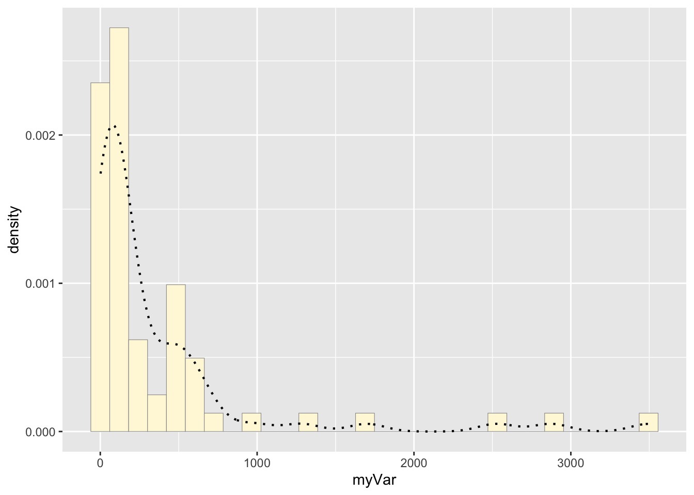
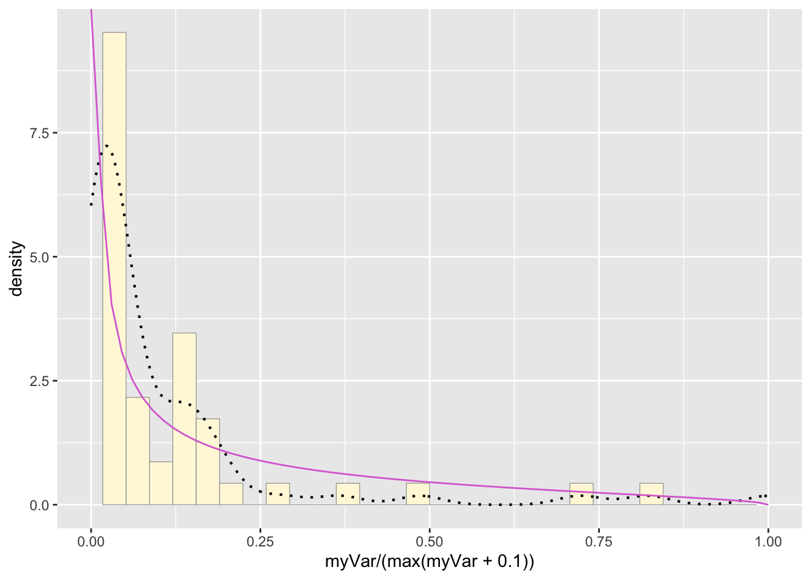

homework_08
Lamija Semic
3/19/25
1: Run sample code
a: Read in/generate data vector
library(ggplot2)
library(MASS)
#z <- rnorm(n=3000, mean=0.2)
#z <- data.frame(1:3000, z)
#names(z) <- list("ID", "myVar")
#z <- z[z$myVar>0,]
#str(z)
#summary(z$myVar)b: Plot histogram
#p1 <- ggplot(data=z, aes(x=myVar, y=..density..)) +
#geom_histogram(color="grey60",fill="cornsilk",size=0.2)
#print(p1)c: Add empirical density curve
#p1 <- p1 + geom_density(linetype="dotted",size=0.75)
#print(p1)d: Get maximum likelihood parameters for normal
#normPars <- fitdistr(z$myVar,"normal")
#print(normPars)
#str(normPars)
#normPars$estimate["mean"] e: Plot normal probability density
#meanML <- normPars$estimate["mean"]
#sdML <- normPars$estimate["sd"]
#xval <- seq(0,max(z$myVar),len=length(z$myVar))
# stat <- stat_function(aes(x = xval, y = ..y..), fun = dnorm, colour="red", n = length(z$myVar), args = list(mean = meanML, sd = sdML))
#p1 + statf: Plot exponential probability density
#expoPars <- fitdistr(z$myVar,"exponential")
#rateML <- expoPars$estimate["rate"]
#stat2 <- stat_function(aes(x = xval, y = ..y..), fun = dexp, colour="blue", n = length(z$myVar), args = list(rate=rateML))
#p1 + stat + stat2g: Plot uniform probability density
#stat3 <- stat_function(aes(x = xval, y = ..y..), fun = dunif, colour="darkgreen", n = length(z$myVar), args = list(min=min(z$myVar), max=max(z$myVar)))
#p1 + stat + stat2 + stat3h: Plot gamma probability density
#gammaPars <- fitdistr(z$myVar,"gamma")
#shapeML <- gammaPars$estimate["shape"]
#rateML <- gammaPars$estimate["rate"]
#stat4 <- stat_function(aes(x = xval, y = ..y..), fun = dgamma, colour="brown", n = length(z$myVar), args = list(shape=shapeML, rate=rateML))
# p1 + stat + stat2 + stat3 + stat4g: Plot beta probability density
#pSpecial <- ggplot(data=z, aes(x=myVar/(max(myVar + 0.1)), y=..density..)) +
# geom_histogram(color="grey60",fill="cornsilk",size=0.2) +
# xlim(c(0,1)) +
# geom_density(size=0.75,linetype="dotted")
#betaPars <- fitdistr(x=z$myVar/max(z$myVar + 0.1),start=list(shape1=1,shape2=2),"beta")
#shape1ML <- betaPars$estimate["shape1"]
#shape2ML <- betaPars$estimate["shape2"]
#statSpecial <- stat_function(aes(x = xval, y = ..y..), fun = dbeta, colour="orchid", n = length(z$myVar), args = list(shape1=shape1ML,shape2=shape2ML))
#pSpecial + statSpecial2: Sample dataset
z <- read.table("antcountydata.csv", header=TRUE, sep=",")
str(z)## 'data.frame': 67 obs. of 29 variables:
## $ R.county : chr "connecticut,fairfield" "connecticut,hartford" "connecticut,litchfield" "connecticut,middlesex" ...
## $ state : chr "connecticut" "connecticut" "connecticut" "connecticut" ...
## $ county : chr "fairfield" "hartford" "litchfield" "middlesex" ...
## $ ecoregion : chr "new england coastal" "new england coastal" "northeast highlands" "new england coastal" ...
## $ n.species : int 15 50 62 36 63 42 59 32 10 31 ...
## $ n.samples : int 53 192 354 106 454 284 975 99 16 109 ...
## $ lat.centroid : num 41.3 41.8 41.8 41.5 41.4 ...
## $ long.centroid : num -73.4 -72.7 -73.2 -72.5 -72.9 ...
## $ elev.centroid.m : num 176.9 42.8 376.9 69.9 140.6 ...
## $ area.km2 : int 1621 1906 2383 956 1570 1725 1062 1329 1287 17687 ...
## $ mean.ann.temp : num 9.6 9.8 7.8 9.8 9.7 9.8 8.3 8.9 7.1 3.2 ...
## $ mean.diurnal.temp.range: num 10.8 11.8 11.5 10.6 10.7 11.1 11.6 12.1 11.3 12.5 ...
## $ isothermality : num 0.3 0.31 0.3 0.3 0.3 0.31 0.31 0.32 0.28 0.28 ...
## $ temp.seasonality.sd : num 86.9 90.7 90.2 86.5 87.3 ...
## $ max.temp : num 27.4 29.1 26.3 27.7 27.7 27.6 26.8 27.6 26.7 24.6 ...
## $ min.temp : num -8 -8.6 -10.8 -7.5 -7.6 -7.8 -10.1 -9.8 -12.7 -19.4 ...
## $ temp.range : num 35.4 37.7 37.1 35.2 35.3 35.4 36.9 37.4 39.4 44 ...
## $ mean.temp.wettest.Q : num 8.3 14.4 12.4 5.7 8.3 1.2 4.1 4.6 2.6 15.2 ...
## $ mean.temp.driest.Q : num -1.9 -1.1 -3.1 20.7 -0.7 20.5 -2.4 -1.8 18.4 -9.9 ...
## $ mean.temp.warmest.Q : num 20.5 21.3 19 20.7 20.8 20.5 19.4 19.9 19.3 16.4 ...
## $ mean.temp.coldest.Q : num -1.9 -2.3 -4.3 -1.6 -1.8 -1.4 -3.5 -2.9 -5.7 -11.3 ...
## $ ann.precip : int 1250 1167 1246 1239 1222 1229 1233 1218 1134 966 ...
## $ precip.wettest.month : int 117 106 113 118 113 121 116 117 120 103 ...
## $ precipldriest.month : int 88 81 88 91 88 87 87 89 83 53 ...
## $ precip.cv : int 8 7 7 7 7 9 7 7 11 19 ...
## $ precip.wettest.Q : int 338 309 328 331 328 337 326 329 325 296 ...
## $ precip.driest.Q : int 290 266 280 292 287 279 284 290 253 179 ...
## $ precip.warmest.Q : int 304 290 323 292 293 279 306 291 260 292 ...
## $ precip.coldest.Q : int 290 270 284 302 289 310 289 297 279 195 ...summary(z)## R.county state county ecoregion
## Length:67 Length:67 Length:67 Length:67
## Class :character Class :character Class :character Class :character
## Mode :character Mode :character Mode :character Mode :character
##
##
##
## n.species n.samples lat.centroid long.centroid
## Min. : 2.00 Min. : 2.0 Min. :41.27 Min. :-73.39
## 1st Qu.:16.00 1st Qu.: 54.0 1st Qu.:41.91 1st Qu.:-72.59
## Median :34.00 Median : 112.0 Median :43.30 Median :-71.59
## Mean :35.75 Mean : 365.2 Mean :43.27 Mean :-71.42
## 3rd Qu.:51.50 3rd Qu.: 453.5 3rd Qu.:44.43 3rd Qu.:-70.69
## Max. :84.00 Max. :3498.0 Max. :46.66 Max. :-67.63
## elev.centroid.m area.km2 mean.ann.temp mean.diurnal.temp.range
## Min. : 0.00 Min. : 117 Min. : 3.000 Min. : 7.60
## 1st Qu.: 48.99 1st Qu.: 1288 1st Qu.: 5.850 1st Qu.:11.10
## Median :114.31 Median : 1785 Median : 7.200 Median :11.60
## Mean :181.65 Mean : 2622 Mean : 7.281 Mean :11.53
## 3rd Qu.:260.16 3rd Qu.: 2419 3rd Qu.: 9.350 3rd Qu.:12.25
## Max. :770.43 Max. :17687 Max. :10.200 Max. :13.50
## isothermality temp.seasonality.sd max.temp min.temp
## Min. :0.2700 Min. : 73.51 Min. :22.70 Min. :-19.40
## 1st Qu.:0.2850 1st Qu.: 88.24 1st Qu.:25.75 1st Qu.:-14.55
## Median :0.2900 Median : 93.66 Median :26.70 Median :-12.40
## Mean :0.2949 Mean : 93.20 Mean :26.50 Mean :-11.98
## 3rd Qu.:0.3100 3rd Qu.: 97.84 3rd Qu.:27.60 3rd Qu.: -8.75
## Max. :0.3200 Max. :107.02 Max. :29.40 Max. : -4.30
## temp.range mean.temp.wettest.Q mean.temp.driest.Q mean.temp.warmest.Q
## Min. :28.10 Min. : 0.400 Min. :-9.90 Min. :15.40
## 1st Qu.:36.80 1st Qu.: 2.300 1st Qu.:-5.90 1st Qu.:17.90
## Median :39.00 Median : 4.500 Median :-3.30 Median :19.20
## Mean :38.48 Mean : 8.488 Mean : 3.21 Mean :18.96
## 3rd Qu.:40.85 3rd Qu.:16.150 3rd Qu.:18.10 3rd Qu.:20.20
## Max. :44.00 Max. :19.500 Max. :20.70 Max. :21.30
## mean.temp.coldest.Q ann.precip precip.wettest.month precipldriest.month
## Min. :-11.30 Min. : 834 Min. : 96.0 Min. :43.00
## 1st Qu.: -7.15 1st Qu.:1084 1st Qu.:111.0 1st Qu.:68.00
## Median : -5.40 Median :1142 Median :115.0 Median :79.00
## Mean : -5.16 Mean :1124 Mean :114.9 Mean :75.24
## 3rd Qu.: -2.35 3rd Qu.:1181 3rd Qu.:120.0 3rd Qu.:84.00
## Max. : 0.40 Max. :1271 Max. :131.0 Max. :91.00
## precip.cv precip.wettest.Q precip.driest.Q precip.warmest.Q
## Min. : 6.00 Min. :265.0 Min. :143.0 Min. :245.0
## 1st Qu.: 9.00 1st Qu.:308.5 1st Qu.:224.5 1st Qu.:260.5
## Median :11.00 Median :326.0 Median :250.0 Median :284.0
## Mean :12.21 Mean :319.6 Mean :240.2 Mean :284.9
## 3rd Qu.:14.00 3rd Qu.:332.5 3rd Qu.:263.0 3rd Qu.:303.5
## Max. :23.00 Max. :355.0 Max. :292.0 Max. :349.0
## precip.coldest.Q
## Min. :149.0
## 1st Qu.:239.5
## Median :278.0
## Mean :263.0
## 3rd Qu.:296.0
## Max. :325.0library(ggplot2)
library(MASS)
z <- rnorm(n=3000, mean=0.2)
z <- data.frame(1:3000, z)
names(z) <- list("ID", "myVar")
z <- z[z$myVar>0,]
str(z)## 'data.frame': 1719 obs. of 2 variables:
## $ ID : int 1 2 3 4 6 7 9 13 14 15 ...
## $ myVar: num 0.777 1.871 1.077 0.269 1.544 ...summary(z$myVar)## Min. 1st Qu. Median Mean 3rd Qu. Max.
## 0.001181 0.380055 0.746068 0.881430 1.298894 4.016562b: Plot histogram
p1 <- ggplot(data=z, aes(x=myVar, y=..density..)) +
geom_histogram(color="grey60",fill="cornsilk",size=0.2) ## Warning: Using `size` aesthetic for lines was deprecated in ggplot2 3.4.0.
## ℹ Please use `linewidth` instead.
## This warning is displayed once every 8 hours.
## Call `lifecycle::last_lifecycle_warnings()` to see where this warning was
## generated.print(p1)## Warning: The dot-dot notation (`..density..`) was deprecated in ggplot2 3.4.0.
## ℹ Please use `after_stat(density)` instead.
## This warning is displayed once every 8 hours.
## Call `lifecycle::last_lifecycle_warnings()` to see where this warning was
## generated.## `stat_bin()` using `bins = 30`. Pick better value with `binwidth`.
c: Add empirical density curve
p1 <- p1 + geom_density(linetype="dotted",size=0.75)
print(p1)## `stat_bin()` using `bins = 30`. Pick better value with `binwidth`.
d: Get maximum likelihood parameters for normal
normPars <- fitdistr(z$myVar,"normal")
print(normPars)## mean sd
## 0.88143020 0.63689150
## (0.01536128) (0.01086207)str(normPars)## List of 5
## $ estimate: Named num [1:2] 0.881 0.637
## ..- attr(*, "names")= chr [1:2] "mean" "sd"
## $ sd : Named num [1:2] 0.0154 0.0109
## ..- attr(*, "names")= chr [1:2] "mean" "sd"
## $ vcov : num [1:2, 1:2] 0.000236 0 0 0.000118
## ..- attr(*, "dimnames")=List of 2
## .. ..$ : chr [1:2] "mean" "sd"
## .. ..$ : chr [1:2] "mean" "sd"
## $ n : int 1719
## $ loglik : num -1664
## - attr(*, "class")= chr "fitdistr"normPars$estimate["mean"] ## mean
## 0.8814302e: Plot normal probability density
meanML <- normPars$estimate["mean"]
sdML <- normPars$estimate["sd"]
xval <- seq(0,max(z$myVar),len=length(z$myVar))
stat <- stat_function(aes(x = xval, y = ..y..), fun = dnorm, colour="red", n = length(z$myVar), args = list(mean = meanML, sd = sdML))
p1 + stat## `stat_bin()` using `bins = 30`. Pick better value with `binwidth`.f: Plot exponential probability density
expoPars <- fitdistr(z$myVar,"exponential")
rateML <- expoPars$estimate["rate"]
stat2 <- stat_function(aes(x = xval, y = ..y..), fun = dexp, colour="blue", n = length(z$myVar), args = list(rate=rateML))
p1 + stat + stat2## `stat_bin()` using `bins = 30`. Pick better value with `binwidth`.
g: Plot uniform probability density
stat3 <- stat_function(aes(x = xval, y = ..y..), fun = dunif, colour="darkgreen", n = length(z$myVar), args = list(min=min(z$myVar), max=max(z$myVar)))
p1 + stat + stat2 + stat3## `stat_bin()` using `bins = 30`. Pick better value with `binwidth`.
h: Plot gamma probability density
gammaPars <- fitdistr(z$myVar,"gamma")## Warning in densfun(x, parm[1], parm[2], ...): NaNs produced
## Warning in densfun(x, parm[1], parm[2], ...): NaNs produced
## Warning in densfun(x, parm[1], parm[2], ...): NaNs produced
## Warning in densfun(x, parm[1], parm[2], ...): NaNs produced
## Warning in densfun(x, parm[1], parm[2], ...): NaNs produced
## Warning in densfun(x, parm[1], parm[2], ...): NaNs produced
## Warning in densfun(x, parm[1], parm[2], ...): NaNs producedshapeML <- gammaPars$estimate["shape"]
rateML <- gammaPars$estimate["rate"]
stat4 <- stat_function(aes(x = xval, y = ..y..), fun = dgamma, colour="brown", n = length(z$myVar), args = list(shape=shapeML, rate=rateML))
p1 + stat + stat2 + stat3 + stat4## `stat_bin()` using `bins = 30`. Pick better value with `binwidth`.
g: Plot beta probability density
pSpecial <- ggplot(data=z, aes(x=myVar/(max(myVar + 0.1)), y=..density..)) +
geom_histogram(color="grey60",fill="cornsilk",size=0.2) +
xlim(c(0,1)) +
geom_density(size=0.75,linetype="dotted")
betaPars <- fitdistr(x=z$myVar/max(z$myVar + 0.1),start=list(shape1=1,shape2=2),"beta")## Warning in densfun(x, parm[1], parm[2], ...): NaNs produced
## Warning in densfun(x, parm[1], parm[2], ...): NaNs produced
## Warning in densfun(x, parm[1], parm[2], ...): NaNs produced
## Warning in densfun(x, parm[1], parm[2], ...): NaNs produced
## Warning in densfun(x, parm[1], parm[2], ...): NaNs producedshape1ML <- betaPars$estimate["shape1"]
shape2ML <- betaPars$estimate["shape2"]
statSpecial <- stat_function(aes(x = xval, y = ..y..), fun = dbeta, colour="orchid", n = length(z$myVar), args = list(shape1=shape1ML,shape2=shape2ML))
pSpecial + statSpecial## `stat_bin()` using `bins = 30`. Pick better value with `binwidth`.## Warning: Removed 2 rows containing missing values or values outside the scale range
## (`geom_bar()`).
3: Best-fitting distribution
The gamma density distribution is the most fitting for this sample data.
4: New data set
z <- rnorm(n=3000, mean=0.2)
z <- data.frame(1:3000, z)
names(z) <- list("ID", "myVar")
z <- z[z$myVar>0,]
str(z)## 'data.frame': 1780 obs. of 2 variables:
## $ ID : int 1 3 4 6 9 10 11 12 13 15 ...
## $ myVar: num 1.198 0.228 0.652 0.204 0.866 ...summary(z$myVar)## Min. 1st Qu. Median Mean 3rd Qu. Max.
## 0.000241 0.362260 0.758264 0.881845 1.258463 3.364746library(ggplot2)
library(MASS)
z <- rnorm(n=3000, mean=0.2)
z <- data.frame(1:3000, z)
names(z) <- list("ID", "myVar")
z <- z[z$myVar>0,]
str(z)## 'data.frame': 1775 obs. of 2 variables:
## $ ID : int 2 3 6 7 9 12 13 14 18 19 ...
## $ myVar: num 0.1152 1.4118 0.0882 1.8272 1.8146 ...summary(z$myVar)## Min. 1st Qu. Median Mean 3rd Qu. Max.
## 0.001022 0.380222 0.776220 0.897571 1.308592 4.038535b: Plot histogram
p1 <- ggplot(data=z, aes(x=myVar, y=..density..)) +
geom_histogram(color="grey60",fill="cornsilk",size=0.2)
print(p1)## `stat_bin()` using `bins = 30`. Pick better value with `binwidth`.
c: Add empirical density curve
p1 <- p1 + geom_density(linetype="dotted",size=0.75)
print(p1)## `stat_bin()` using `bins = 30`. Pick better value with `binwidth`.
d: Get maximum likelihood parameters for normal
normPars <- fitdistr(z$myVar,"normal")
print(normPars)## mean sd
## 0.89757079 0.64905370
## (0.01540570) (0.01089348)str(normPars)## List of 5
## $ estimate: Named num [1:2] 0.898 0.649
## ..- attr(*, "names")= chr [1:2] "mean" "sd"
## $ sd : Named num [1:2] 0.0154 0.0109
## ..- attr(*, "names")= chr [1:2] "mean" "sd"
## $ vcov : num [1:2, 1:2] 0.000237 0 0 0.000119
## ..- attr(*, "dimnames")=List of 2
## .. ..$ : chr [1:2] "mean" "sd"
## .. ..$ : chr [1:2] "mean" "sd"
## $ n : int 1775
## $ loglik : num -1751
## - attr(*, "class")= chr "fitdistr"normPars$estimate["mean"] ## mean
## 0.8975708e: Plot normal probability density
meanML <- normPars$estimate["mean"]
sdML <- normPars$estimate["sd"]
xval <- seq(0,max(z$myVar),len=length(z$myVar))
stat <- stat_function(aes(x = xval, y = ..y..), fun = dnorm, colour="red", n = length(z$myVar), args = list(mean = meanML, sd = sdML))
p1 + stat## `stat_bin()` using `bins = 30`. Pick better value with `binwidth`.
f: Plot exponential probability density
expoPars <- fitdistr(z$myVar,"exponential")
rateML <- expoPars$estimate["rate"]
stat2 <- stat_function(aes(x = xval, y = ..y..), fun = dexp, colour="blue", n = length(z$myVar), args = list(rate=rateML))
p1 + stat + stat2## `stat_bin()` using `bins = 30`. Pick better value with `binwidth`.
g: Plot uniform probability density
stat3 <- stat_function(aes(x = xval, y = ..y..), fun = dunif, colour="darkgreen", n = length(z$myVar), args = list(min=min(z$myVar), max=max(z$myVar)))
p1 + stat + stat2 + stat3## `stat_bin()` using `bins = 30`. Pick better value with `binwidth`.
h: Plot gamma probability density
gammaPars <- fitdistr(z$myVar,"gamma")## Warning in densfun(x, parm[1], parm[2], ...): NaNs produced
## Warning in densfun(x, parm[1], parm[2], ...): NaNs produced
## Warning in densfun(x, parm[1], parm[2], ...): NaNs produced
## Warning in densfun(x, parm[1], parm[2], ...): NaNs produced
## Warning in densfun(x, parm[1], parm[2], ...): NaNs produced
## Warning in densfun(x, parm[1], parm[2], ...): NaNs produced
## Warning in densfun(x, parm[1], parm[2], ...): NaNs producedshapeML <- gammaPars$estimate["shape"]
rateML <- gammaPars$estimate["rate"]
stat4 <- stat_function(aes(x = xval, y = ..y..), fun = dgamma, colour="brown", n = length(z$myVar), args = list(shape=shapeML, rate=rateML))
p1 + stat + stat2 + stat3 + stat4## `stat_bin()` using `bins = 30`. Pick better value with `binwidth`.
g: Plot beta probability density
pSpecial <- ggplot(data=z, aes(x=myVar/(max(myVar + 0.1)), y=..density..)) +
geom_histogram(color="grey60",fill="cornsilk",size=0.2) +
xlim(c(0,1)) +
geom_density(size=0.75,linetype="dotted")
betaPars <- fitdistr(x=z$myVar/max(z$myVar + 0.1),start=list(shape1=1,shape2=2),"beta")## Warning in densfun(x, parm[1], parm[2], ...): NaNs produced
## Warning in densfun(x, parm[1], parm[2], ...): NaNs produced
## Warning in densfun(x, parm[1], parm[2], ...): NaNs produced
## Warning in densfun(x, parm[1], parm[2], ...): NaNs produced
## Warning in densfun(x, parm[1], parm[2], ...): NaNs producedshape1ML <- betaPars$estimate["shape1"]
shape2ML <- betaPars$estimate["shape2"]
statSpecial <- stat_function(aes(x = xval, y = ..y..), fun = dbeta, colour="orchid", n = length(z$myVar), args = list(shape1=shape1ML,shape2=shape2ML))
pSpecial + statSpecial## `stat_bin()` using `bins = 30`. Pick better value with `binwidth`.## Warning: Removed 2 rows containing missing values or values outside the scale range
## (`geom_bar()`).